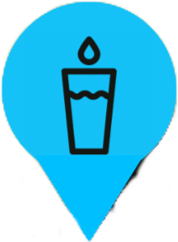

Les pompes à vélo en libre service (souvent station de réparation ou véloboxe)

Les fontaines
Les toilettes (souvent accompagné d'un point d'eau, notamment à l'arrière des sanisettes)
Les stations vélib
Informations
Données issues d'openstreetmap (données sous licence Open Database, découvrez comment contribuer) ou de l'opendata de la
marie de Paris (sous licence ODdL).
Fond de carte cyclosm.
La carte est disponible sous forme de webapp pour les appareils compatible. Voir comment l'intaller pour